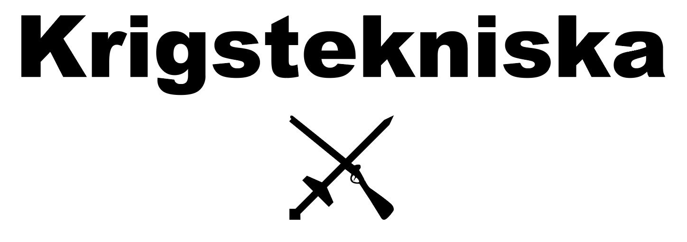

Digitala revolutionen
Sektion 9

GPS-satellit
Här, i denna utställning, får ni en titt på vad som hände med datorn
när den började utvecklas till att bli en hushållsapparat. Precis efter
att det kalla kriget slutat och Sovjetunionens regim föll avslutades
de flesta oroligheterna och världen kunde fokusera på fredliga och civila
framsteg.
Denna utställning visar er dels hur fred också kan vara en katalysator
för teknisk utveckling, men även hur krigsföringen anpassat sig till
globaliseringen och digitaliseringen.
Delsektion 1:
Bill Gates rum
Bill Gates var redan 1975 en pionjär inom den digitala utvecklingen, då
han och Paul Allen grundade Microsoft. Gates var Microsofts VD fram till
år 2000, men han har länge funnits kvar i företaget.
I detta rum visas en typisk datorbänk med en dator från det tidigare 90-talet. Denna
dator kör Windows 3.1, en av de första grafiska operativsystemen som Microsoft
släppt.
Innan 90-talet var operativsystemen textbaserade, vilket många inte tänker på när de
använder dagens datorer. Textoperativsystem finns fortfarande kvar, i bakgrunden, och
går att komma åt med hjälp av terminalprogram.
Delsektion 2:
Laptopkorridoren
Här i laptopkorridoren visas en tidslinje av laptops från 80-, 90- och 00-talet.
Visste du till exempel att den första bärbara datorn inte hade en hårddisk?
Här får du även prova att använda och bära en IBM Thinkpad, som vägde hela 3.4 kg!
Vi visar även upp netbookens föregångare, Asus Eee-serien. Netbookens framkomst
innebar början på en era där digitalt arbete görs exklusivt online.
Jämte laptopsen står även ett antal olika lagringsformat uppställda.